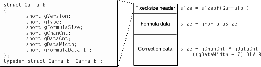

Gamma Table Implementation
The Power Macintosh gamma table structure is defined in the header file
QuickDraw.h. Its definition is diagrammed in
Figure 13-2.
Figure 13-2
Gamma table structure

The gamma table is a variable length data structure. As shown in
Figure 13-2, the structure
GammaTbl
sits at the front of a pool of memory that holds the data required to apply gamma correction.
The last member of the fixed-length portion of the structure
gFormulaData
is also the entry point to the variable-length portion of the structure. This variable-length portion is divided into two sets, formula data and correction data.
Field descriptions
-
gVersion
-
The version of the
GammaTbl
data structure.
gVersion == 0
is the only version of the
GammaTbl
data structure currently defined.
-
gType
-
Since gamma tables are created empirically, they can either attempt to correct the response curve of a specific CLUT, a specific display, or a specific combination of CLUT and display.
gType == 0
indicates that the curve is derived from a display, not a CLUT. In this case, two different hardware modules can share the same gamma table.
-
gFormulaSize
-
See
gFormulaData, below.
-
gChanCnt
-
The number of tables of correction data. If there is more than one channel of correction data, the channels are ordered red, green, blue. If there is only one channel of correction data, the same correction is applied to the red, green, and blue channels of the hardware. The only valid values for
gChanCnt
are 1 and 3.
-
gDataCnt
-
The number of entries of correction information per channel.
-
gDataWidth
-
How many significant bits of information are available in each entry, packed to the next larger byte size.
-
gFormulaData
-
The entry point to the variable-length portion of the gamma table, consisting of the formula data, if any, followed by the correction data. If a gamma table is hardware-invariant (
gType ==
0
), then the formula data is never inspected. If a gamma table varies with the hardware (in which case
gType
is the ID of the frame buffer), and
gFormulaSize
!=
0, then
gFormulaData[0]
is inspected to see if it is the ID of the monitor currently connected. If the monitor IDs match, the gamma table is considered valid; otherwise it is considered to be the wrong table.
© 1999 Apple Computer, Inc. – (Last Updated 26 March 99)